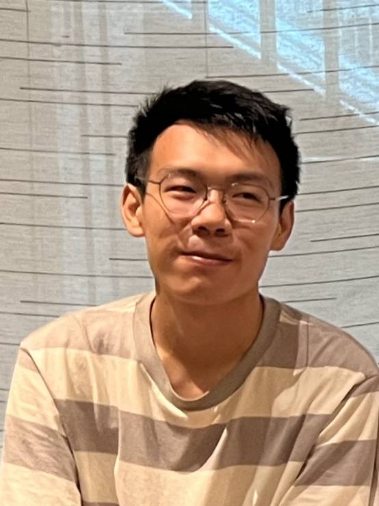
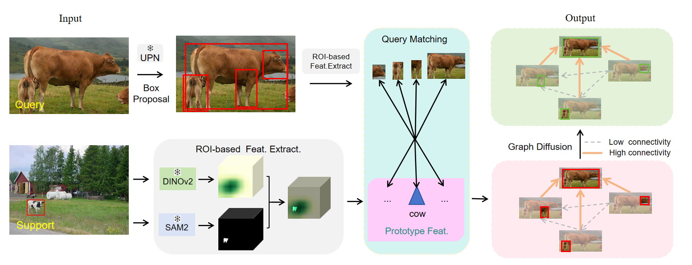
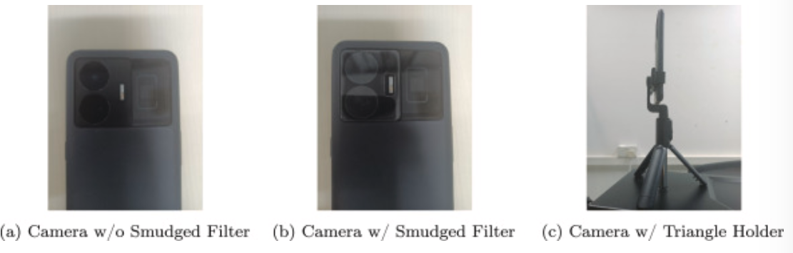

Chen-Bin FengPh.D. Candidate
University of Macau |
 |
Biography
I am currently a PhD cadidate at Computer Science department in University of Macau. Under the supervision of Prof. Chi Man Vong. Before that, I obtained the Master degree in City University of Hong Kong and the Bachelor degree in Jilin University. I work as a research intern in Intellindust AI Lab with Dr. Xi Shen. My current research interests lie primarily in computer vision and machine learning, particularly focusing on:
Agentic AI, Object Detection, Semantic Segmentation, and Image Restoration.
我正在寻找2026年秋季入职的全职岗位, 欢迎邮件联系 I will graduate in 2026 Fall. Drop me an Email if you are recruiting!Selected Publications [Google Scholar]
 |
FSOD-VFM: Few-Shot Object Detection with Foundation Models
Chen-Bin Feng*, Youyang Sha*, Longfei Liu, Yongjun Yu, Chi Man Vong, Xuanlong Yu, Xi Shen International Conference on Learning Representations (ICLR), 2026 [paper|code] |
 |
Unpaired to paired data synthesis and generative ensemble network for smudged image restoration
Chen-Bin Feng*, Kangdao Liu, Jian Sun, Qi Lai, Jiping Jin, Houcheng Su, Guagntai Wang, Chi Man Vong Applied Soft Computing (ASOC), 2026 [paper|code] |

© Chen-Bin Feng | Last updated: January 2026